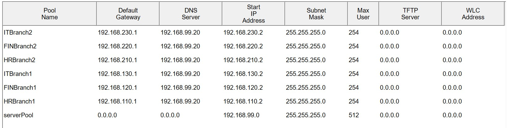

Project: Cisco Packet Tracer Enterprise Multi-Branch Network
This project simulates a real-world enterprise network environment consisting of a Headquarters (HQ), Branch 1, Branch 2, and an ISP Router. The network was designed to demonstrate network segmentation, inter-site connectivity, centralized network services, dynamic routing, and Internet access.
The implementation includes VLANs for departmental separation, Router-on-a-Stick for Inter-VLAN Routing, OSPF for dynamic route exchange between sites, DHCP and DNS services hosted at HQ, NAT/PAT for Internet access, and WAN links connecting branch offices to headquarters.
Topology

Technology Used
Layer 2 Technologies
- VLANs
- 802.1Q Trunking
- Switch Port Configuration
Layer 3 Technologies
- Inter-VLAN Routing (Router-on-a-Stick)
- OSPF (Open Shortest Path First)
- Static Default Route
Network Services
- DHCP Server
- DHCP Relay (ip helper-address)
- DNS Server
- HTTP Web Server
WAN Technologies
- Point-to-Point Serial Links
- Multi-Branch Connectivity
Security & Internet Access
- NAT (Network Address Translation)
- PAT (Port Address Translation)
- ACLs (Access Control Lists)
Key Learnings
VLAN Segmentation
- Created separate broadcast domains for HR, Finance, IT, and Servers.
- Improved network organization and scalability.
Inter-VLAN Routing
- Implemented Router-on-a-Stick using subinterfaces.
- Enabled communication between departments while maintaining VLAN separation.
Dynamic Routing with OSPF
- Configured OSPF between HQ and branch routers.
- Learned route advertisement and automatic route learning.
WAN Connectivity
- Established communication between HQ and remote branches using serial WAN links.
- Verified connectivity through routing tables and end-to-end testing.
DHCP and DHCP Relay
- Centralized IP address allocation at HQ.
- Used DHCP relay agents for clients located in remote VLANs.
DNS Services
- Configured hostname resolution through an internal DNS server.
- Enabled users to access the web server using a domain name.
NAT/PAT
- Configured Internet access using NAT Overload.
- Learned how Inside and Outside NAT interfaces affect translation creation.
DHCP Pools

DNS Service


OSPF Route
HR Router

Branch1 Router

Branch2 Router

OSPF Neighbor
HQ Router

Branch1 Router

Branch2 Router

NAT Translation and Statistics


Vlans
Branch 1 Switch

Branch 2 Switch